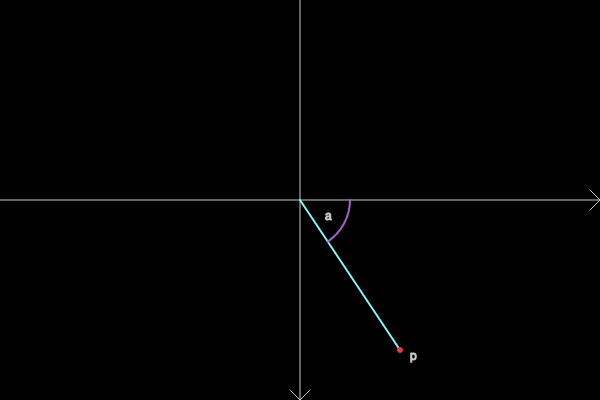
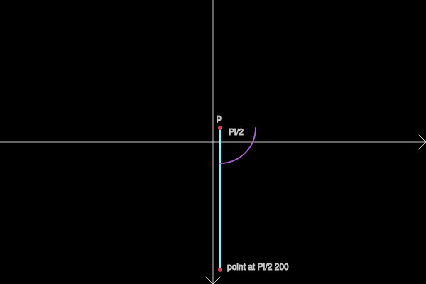

A collection of records and functions to work with points in two and three dimensions.
(ns somerville.geometry.point
(:require
[taoensso.timbre :as log]
[somerville.geometry.commons :as c]))
Define a two dimensional point Implementing Comparable in Clojure so sorting points is easy.
#?(:clj
(defrecord Point2 [x y]
java.lang.Comparable
(java.lang.Comparable/compareTo
[this other]
(if
(= (:x this) (:x other))
(c/compareTo (:y this) (:y other))
(c/compareTo (:x this) (:x other))))
c/Printable
(c/out [this i] (str (c/indent i) "Point (" x "," y ")"))
(c/out [this] (c/out this 0))))
Define a two dimensional point Implementing IComparable in ClojureScript so sorting points is easy.
#?(:cljs
(defrecord Point2 [x y]
IComparable
(-compare
[this other]
(if
(= (:x this) (:x other))
(c/compareTo (:y this) (:y other))
(c/compareTo (:x this) (:x other))))
c/Printable
(c/out [this i] (str (c/indent i) "Point (" x "," y ")"))
(c/out [this] (c/out this 0))))
Define a three dimensional point Implementing Comparable in Clojure so sorting points is easy.
#?(:clj
(defrecord Point3 [x y z]
java.lang.Comparable
(java.lang.Comparable/compareTo
[this other]
(if
(= (:x this) (:x other))
(if
(= (:y this) (:y other))
(c/compareTo (:z this) (:z other))
(c/compareTo (:y this) (:y other)))
(c/compareTo (:x this) (:x other))))
c/Printable
(c/out [this i] (str (c/indent i) "Point (" x "," y "," z ")"))
(c/out [this] (c/out this 0))))
Define a three dimensional point Implementing IComparable in ClojureScript so sorting points is easy.
#?(:cljs
(defrecord Point3 [x y z]
IComparable
(-compare
[this other]
(if
(= (:x this) (:x other))
(if
(= (:y this) (:y other))
(c/compareTo (:z this) (:z other))
(c/compareTo (:y this) (:y other)))
(c/compareTo (:x this) (:x other))))
c/Printable
(c/out [this i] (str (c/indent i) "Point (" x "," y "," z ")"))
(c/out [this] (c/out this 0))))
Create a point in either 2 or 3 dimensions.
(defn point ([x y] (Point2. x y)) ([x y z] (Point3. x y z)))
Ensure point has three dimensions. If the third component is missing we assume 0.
(defn ensure-3d [p] (if (nil? (:z p)) (point (:x p) (:y p) 0) p))
Get the midpoint of two points. Both points should either be 2d or 3d.
(defn midpoint
[p1 p2]
(if (and (not (nil? (:z p1))) (not (nil? (:z p2))))
(point (/ (+ (:x p1) (:x p2)) 2) (/ (+ (:y p1) (:y p2)) 2) (/ (+ (:z p1) (:z p2)) 2))
(point (/ (+ (:x p1) (:x p2)) 2) (/ (+ (:y p1) (:y p2)) 2))))
Get the slope of two points.
(defn slope
[p1 p2]
(let [dx (- (:x p2) (:x p1))
dy (- (:y p2) (:y p1))]
(if (or (= dx 0.0) (= dx 0)) nil (/ dy dx))))
Subtract second point from first
(defn subtract
[p1 p2]
(if (or (nil? p1) (nil? p2))
nil
(if (and (not (nil? (:z p1))) (not (nil? (:z p2))))
(point (- (:x p1) (:x p2)) (- (:y p1) (:y p2)) (- (:z p1) (:z p2)))
(point (- (:x p1) (:x p2)) (- (:y p1) (:y p2))))))
Calculate distance between two points.
(defn distance
[p1 p2]
(if (or (nil? p1) (nil? p2))
(do
(log/info (str "distance: one point is nil: " (if (nil? p1) "nil" (c/out p1)) " <-> " (if (nil? p2) "nil" (c/out p2))))
#?(:clj Long/MAX_VALUE :cljs (.-MAX_VALUE js/Number)))
(let [dx (- (:x p1) (:x p2))
dy (- (:y p1) (:y p2))
dz (- (get p1 :z 0) (get p2 :z 0))]
(Math/sqrt (+ (* dx dx) (* dy dy) (* dz dz))))))
Normalize point (as vector) to length 1 if possible.
(defn normalize
[p]
(let [z (point 0 0 0)
d (distance p z)]
(if (c/close-to 0 d)
p
(point (/ (:x p) d) (/ (:y p) d) (/ (get p :z 0) d)))))
Calculate cross product between two 3D vectors.
(defn cross
[p1 p2]
(let [p1 (ensure-3d p1)
p2 (ensure-3d p2)]
(point
(- (* (:y p1) (:z p2)) (* (:z p1) (:y p2)))
(- (* (:z p1) (:x p2)) (* (:x p1) (:z p2)))
(- (* (:x p1) (:y p2)) (* (:y p1) (:x p2))))))
Calculate dot product between two points.
(defn dot [p1 p2] (+ (* (:x p1) (:x p2)) (* (:y p1) (:y p2)) (* (get p1 :z 0) (get p2 :z 0))))
Get the quadrant a point is in.
(defn quadrant
[p]
(if (nil? p)
0
(cond (and (= (:x p) 0) (= (:y p) 0)) 1
(and (> (:x p) 0) (>= (:y p) 0)) 1
(and (<= (:x p) 0) (> (:y p) 0)) 2
(and (< (:x p) 0) (<= (:y p) 0)) 3
(and (>= (:x p) 0) (< (:y p) 0)) 4)))
Calculate the angle that is opened by the lines from (0,0) to (1,0) and (0,0) to p.

(defn angle-to-x
[p]
(let [p1 (point 0 0)
p2 (point 1 0)
p3 p
d12 (distance p1 p2)
d13 (distance p1 p3)
d23 (distance p2 p3)
t1 (* 2 d12 d13)
t (if (= 0 t1) 0 (/ (- (+ (* d12 d12) (* d13 d13)) (* d23 d23)) t1))
a (Math/acos t)
a (if (< (:y p) 0) (- (* 2 Math/PI) a) a)]
a))
Calculate the angle that is opened by the lines from p1 to p2 and p1 to p3.
(defn angle [p1 p2 p3] (- (angle-to-x (subtract p3 p1)) (angle-to-x (subtract p2 p1))))
Calculate the angle that is opened by the lines from p1 to p2 and p1 to p3. No negative results.
(defn angle-pos
[p1 p2 p3]
(try
(let [a (angle p1 p2 p3)]
(if (< a 0) (+ (* 2 Math/PI) a) a))
(catch #?(:clj Exception :cljs js/Object) e (log/info (str "Error calculating angle between:\\n" (c/out p1 1) "\\n" (c/out p2 1) "\\n" (c/out p3 1))))))
Calculate the angle that is opened by the lines from p1 to p2 and p1 to p3 using dot product. No negative results.
(defn angle-dot
[p1 p2 p3]
(let [v1 (normalize (subtract p2 p1))
v2 (normalize (subtract p3 p1))
vcross (cross v1 v2)
vdot (Math/acos (dot v1 v2))
vdot (if (< (:z vcross) 0) (- (* 2 Math/PI) vdot) vdot)]
vdot))
Given a point find another one in dist at angle.

(defn point-at
[p angle dist]
(point
(+ (:x p) (* dist (Math/cos angle)))
(+ (:y p) (* dist (Math/sin angle)))))
Calculate the alpha and beta angles that define a 3d point.
(defn p3d->angles
[p]
(let [pn (normalize p)
beta (Math/asin (:z pn))
alpha (Math/asin (/ (:y pn) (Math/cos beta)))]
[alpha beta]))
Calculate the 3d point defined by alpha and beta angles.
(defn angles->p3d
[alpha beta]
(let [x (* (Math/cos alpha) (Math/cos beta))
y (* (Math/sin alpha) (Math/cos beta))
z (Math/sin beta)]
(point x y z)))
Check if two points are close together.
(defn close?
[p1 p2]
(and
(c/close-to (:x p1) (:x p2))
(c/close-to (:y p1) (:y p2))
(c/close-to (get p1 :z 0) (get p2 :z 0))))
Treat points as vectors and add them.
(defn add
[p1 p2]
(if (or (nil? p1) (nil? p2))
nil
(point (+ (:x p1) (:x p2)) (+ (:y p1) (:y p2)) (+ (get p1 :z 0) (get p2 :z 0)))))
Treat point as vector and scale it by factor.
(defn scale [p factor] (point (* factor (:x p)) (* factor (:y p)) (* factor (get p :z 0))))
Find values a b such that v = a s + b t.
(defn linear-combination
[v s t]
(let [bupper (- (* (:y v) (:x s)) (* (:x v) (:y s)))
blower (- (* (:y t) (:x s)) (* (:y s) (:x t)))
b (/ bupper blower)
a (/ (- (:x v) (* b (:x t))) (:x s))]
[a b]))
Spheric linear interpolation between two points at parameter t.
(defn slerp
[p1 p2 t]
(let [np1 (normalize p1)
np2 (normalize p2)
dot (dot np1 np2)
dot (if (< dot 0) (* -1 dot) dot)
np1 (if (< dot 0) (scale np1 -1) np1)
theta0 (Math/acos dot)
theta (* t theta0)
s0 (- (Math/cos theta) (* dot (/ (Math/sin theta) (Math/sin theta0))))
s1 (/ (Math/sin theta) (Math/sin theta0))]
(add (scale p1 s0) (scale p2 s1))))
Create average of points.
(defn average [ps] (scale (reduce add ps) (/ 1 (count ps))))
Find point closest to the lower left.
(defn low-left
[ps]
(let [mx (apply min (map :x ps))
my (apply min (map :y ps))
ll (point mx my)]
(first (sort-by #(distance ll %) ps))))